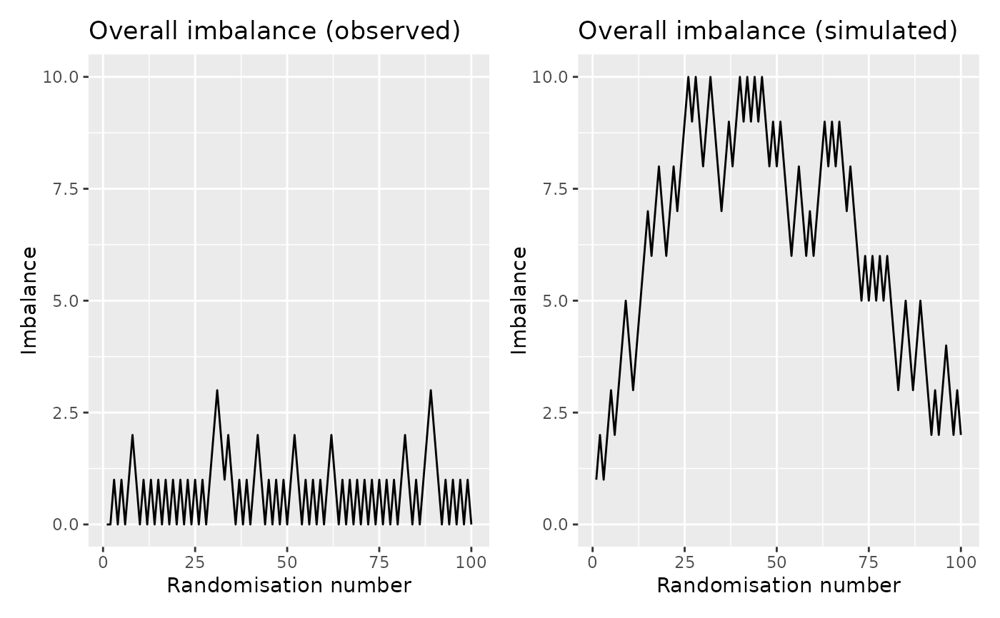
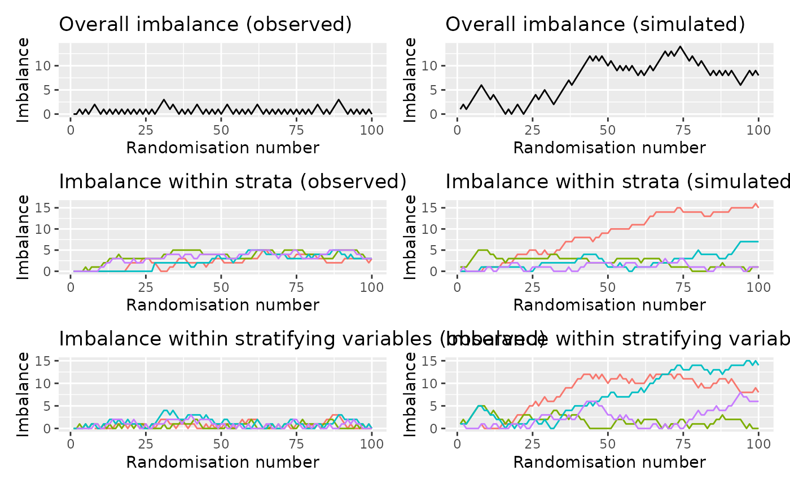
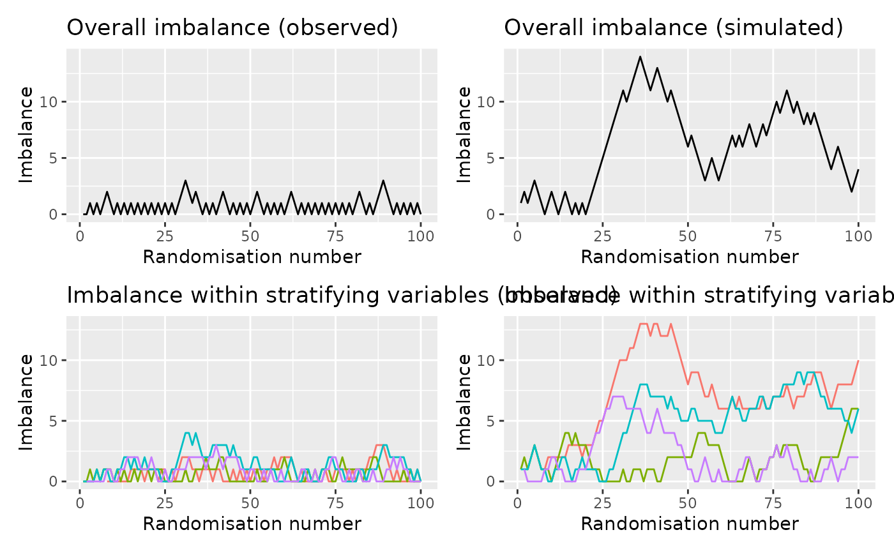

Depict the imbalance of a randomisation sequence through time
imbalance_seq_plots.RdIt can be useful to see how imbalance changes through time. This function allows such a depiction by plotting the maximum imbalance as a function of randomisation number (assuming that the observations are in the randomisation order). This is especially useful in the case of randomisation via minimisation. As well as the overall imbalance, the function also depicts the imbalance within each strata (i.e. the interaction among stratifying variables) and within strata identified by each stratifying variable itself.
Value
Up to six ggplots. Each has the randomisation sequence along the x-axis and imbalance on the y-axis. The different lines denotes different groupings. All plots are paired: the first plot shows the observed balance, the second shows the balance in a simulated dataset. There are up to three pairs of plots.
First the overall values are shown.
Second, each line represents a group as defined by the stratification variables. E.g., if there is a 2-level stratification variable and a 3-level variable, there will be 5 lines.
The third pair shows the individual strata - the combination of all stratification variables. For the 2- and 3-level example mentioned above, this would result in 6 lines. This can be skipped by setting
crosstoFALSE.
Examples
data(rando_balance)
# without stratification variables
imbalance_seq_plots(rando_balance, "rando_res")
#> Calculating sequential imbalance (overall)
#> Calculating simulated sequential imbalance (overall)

# with stratification factors
imbalance_seq_plots(rando_balance, "rando_res",
c("strat1", "strat2"))
#> Calculating sequential imbalance (overall)
#> Calculating simulated sequential imbalance (overall)
#> Calculating sequential imbalance (strata)
#> Calculating simulated sequential imbalance (strata)

# do not cross the stratification factors
imbalance_seq_plots(rando_balance, "rando_res",
c("strat1", "strat2"),
cross = FALSE)
#> Calculating sequential imbalance (overall)
#> Calculating simulated sequential imbalance (overall)
#> Calculating sequential imbalance (strata)
#> Calculating simulated sequential imbalance (strata)
